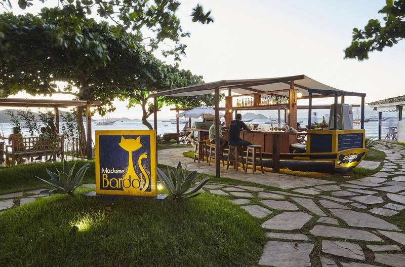

Sobre a casa
Pé na grama, vista para o mar
Um espaço descontraído e natural, à beira-mar, no coração do Triângulo de Búzios.
No cardápio, pratos brasileiros e internacionais. Para acompanhar, drinques e música, do almoço até a noite.
Abre todos os dias a partir das 11h30, na Av. José Bento Ribeiro Dantas.
7 diaspor semana
11h30abre às
4,7no Google

Galeria
Do fim de tarde à noite
O jardim, o bar e as mesas de frente para a baía, em fotos da própria casa.
Horários
Aberto todos os dias
- segunda11h30 – 23h
- terça11h30 – 23h
- quarta11h30 – 23h
- quinta11h30 – 23h
- sexta11h30 – 0h
- sábado11h30 – 0h
- domingo11h30 – 23h
Onde fica
Armação dos Búzios – RJ, 28950-000 Como chegar
Triângulo de Búzios
Av. José Bento Ribeiro Dantas, 805Armação dos Búzios – RJ, 28950-000 Como chegar